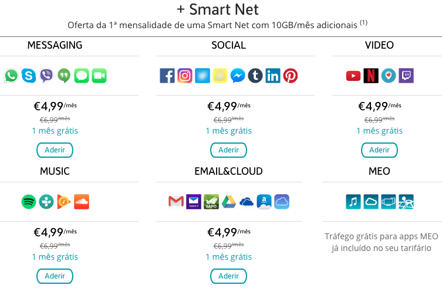

The Doublethink of Donald J. Trump
Net Neutrality
Date:
10:58 AM - 12 Nov 2014
Obama’s attack on the internet is another top down power grab. Net neutrality is the Fairness Doctrine. Will target conservative media.
— Donald J. Trump (@realDonaldTrump) November 12, 2014
For those who don't know, net neutrality is a guidline that most internet service providers follow. It requires that all internet content and communications are treated the same in terms of speed and monitization. With a regulation like net nuetrality ISPs can't go out of it's way to censor, promote, slow down, or charge money for the websites you visit.
Net neutrality prevents webpages like this:
From ever existing.
From the tweet above, it looks like Donald Trump is in support of protecting net nuetrality and the consumer from unfair business practices. He's criticizing Obama- a president who was actually on the same page as him- and expresses worry that right wing media outlets like Fox News will be targeted in the wake of its removal.
But with the doublethink of Donald in The White House we see our preseident putting his money exactly where his mouth isn't.
On November 21, 2017, the Federal Comunications Commission under Donald Trump's presidency brought fourth it's plan to repeal net neutrality.
On June 11, 2018 the FCC acheived their goal.
https://www.nytimes.com/2018/06/11/technology/net-neutrality-repeal.html
LGBT Rights
Date:
12:31 PM - 14 Jun 2016
Thank you to the LGBT community! I will fight for you while Hillary brings in more people that will threaten your freedoms and beliefs.
— Donald J. Trump (@realDonaldTrump) June 14, 2016
Thankyou for your LGBT support Mr. Trump! I'm sure they can rest easy with someone like you on their side.
Oh... wait a minute...
After consultation with my Generals and military experts, please be advised that the United States Government will not accept or allow......
— Donald J. Trump (@realDonaldTrump) July 26, 2017
....Transgender individuals to serve in any capacity in the U.S. Military. Our military must be focused on decisive and overwhelming.....
— Donald J. Trump (@realDonaldTrump) July 26, 2017
....victory and cannot be burdened with the tremendous medical costs and disruption that transgender in the military would entail. Thank you
— Donald J. Trump (@realDonaldTrump) July 26, 2017
At least he supports "religious liberty." Sarah Sanders, Donald Trump's press secretary, told us on December 05, 2017, that he would have no problem with businesses hanging antigay signs, and denying LGBT customrs service.
https://www.advocate.com/politics/2017/12/05/sarah-sanders-trump-ok-businesses-hanging-antigay-signs
Thanks for the support while it lasted Donald!
The Confederate Flag
Date:
23 June 2015
After the Charleston shooting in South Carolina that killed nine African-Americans in 2015 there's been call for southern state lawmakers to remove any association with the state and the confederate flag and confederate monuments. This call has sparked backlash for many in the south. While the flag may mean the symbol of slavery and confederate racism, for many others the flag is a symbol of heritage, rebellion, and counter-culture.
In the wake of the mass shooting in 2015, it would appear as though Donald would fall into the latter group in favoring the removal of the Confederate flag from the South Carolina Statehouse. But with enough time gone by, we'll see that he must have been mistaken. On August 17, 2017, Trump called the removal of Confederate monuments "so foolish," and compared the removal of Confederate statues to removing statues of Washington and Jefferson.
Vacations
Date:
10:58 AM - 12 Nov 2014
"Don't take vacations. What's the point? If you're not enjoying your work, you're in the wrong job." -- Think Like A Billionaire
— Donald J. Trump (@realDonaldTrump) November 19, 2012
This isn't the only tweet of Trump's that talk about vacation.
Trump has proven to be a very hard worker! Just look at how much he abhors lazy vacation having preseident Obama!
Can you believe that,with all of the problems and difficulties facing the U.S., President Obama spent the day playing golf.Worse than Carter
— Donald J. Trump (@realDonaldTrump) October 14, 2014
Pres. Obama is about to embark on a 17 day vacation in his ‘native’ Hawaii, putting Secret Service away from families on Christmas. Aloha!
— Donald J. Trump (@realDonaldTrump) December 19, 2013
We pay for Obama's travel so he can fundraise millions so Democrats can run on lies. Then we pay for his golf.
— Donald J. Trump (@realDonaldTrump) October 14, 2014
But...
If we take a look at the facts, it looks like Trump has had almost 100 more outings for golf at his private clubs than Obama did at this point in his presedency (6/14/2019). He's cost the taxpayer nearly 100 million dollars in his visits to Mar a Lago and Bedminster.
Donald Trump showed the world he's tough on presidents with vacations... except when that president is him.
Hillary's Health
Date:
10:58 AM - 12 Nov 2014
Hillary Clinton doesn't have the strength or stamina to be president. Jeb Bush is a low energy individual, but Hillary is not much better!
— Donald J. Trump (@realDonaldTrump) January 2, 2016